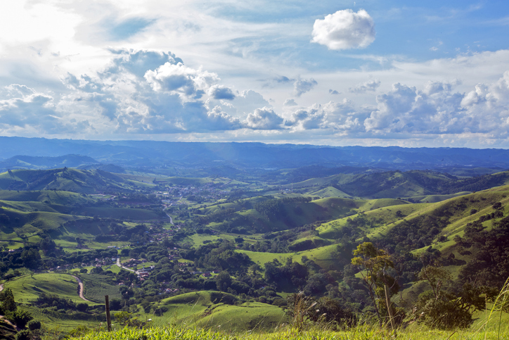
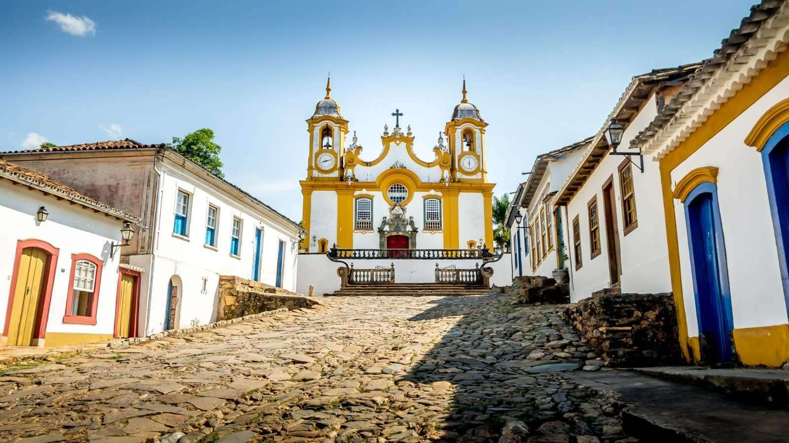
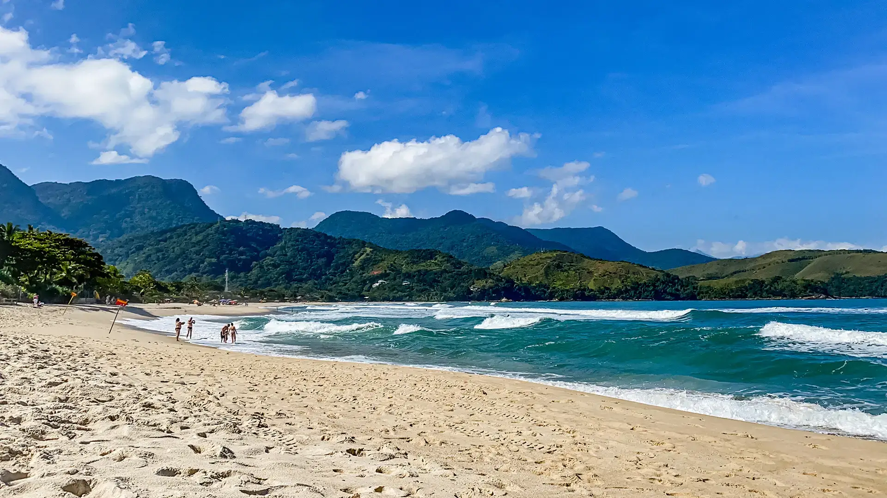
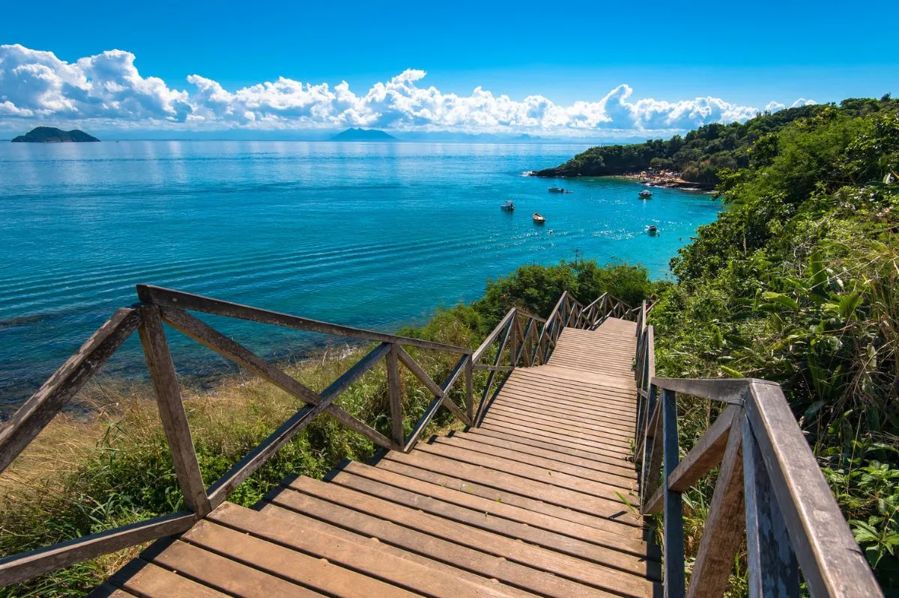
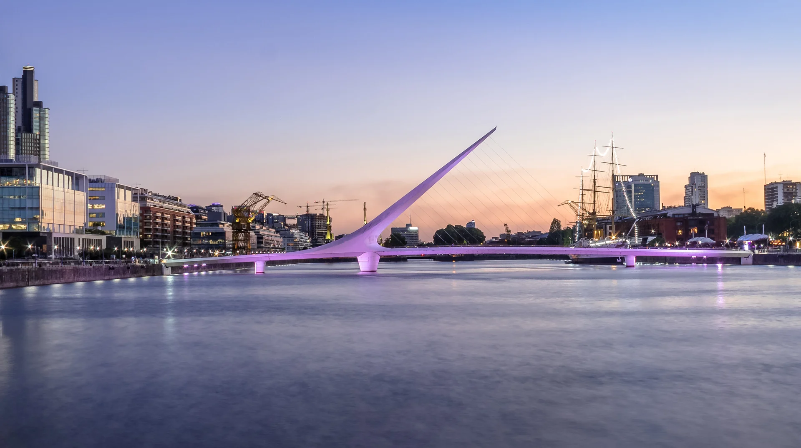
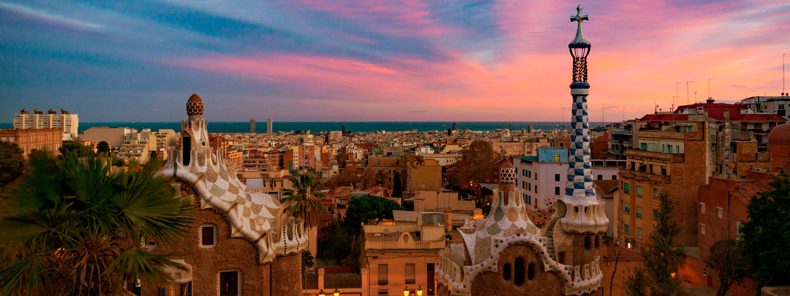
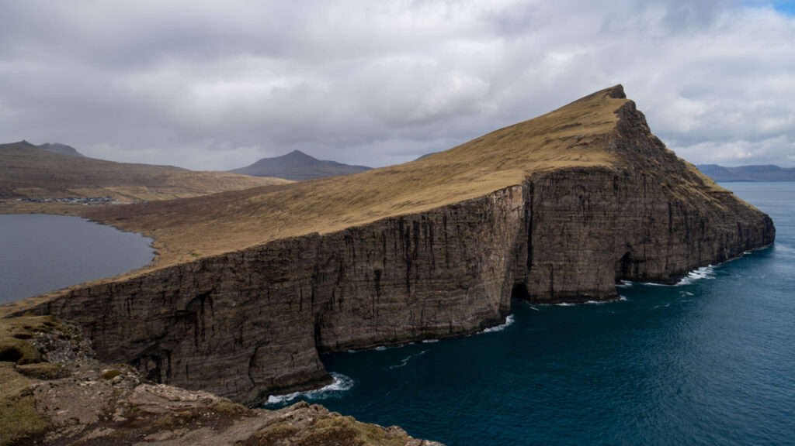
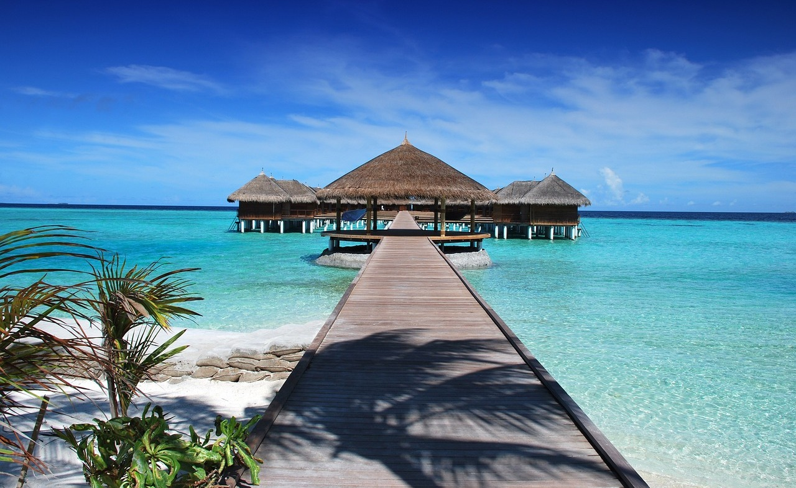

Explore nossos destinos brasileiros

Monte Verde, MG
- Visite o Parque Natural Municipal de Monte Verde
- Faça uma trilha no Pico Selado: um dos pontos mais altos de Monte Verde.A trilha é moderada e leva cerca de 4 horas para ser concluída.
- Visite a Fazenda Radical Adventure Park: A fazenda é um parque de aventuras que oferece atividades como tirolesa, arco e flecha, e cavalgada.
- A descoberta da comida local: Monte Verde é conhecida pela sua culinária alemã, que inclui pratos como chucrute, salsicha e strudel.
- Visite uma Fazenda do Pica-Pau: A fazenda é um local agradável que oferece comida gourmet e uma loja de produtos artesanais. Você pode desfrutar de um jantar romântico ou comprar lembranças para levar para casa.
- Faça um tour pela cidade: Monte Verde tem uma arquitetura alemã única, com casas e prédios que lembram a Europa.
- Visite a cervejaria Fritz: A cervejaria é um local popular que oferece cervejas artesanais e música ao vivo.
- Faça compras na Avenida Monte Verde: A avenida é o coração do comércio em Monte Verde, com lojas que vendem produtos artesanais, roupas e souvenirs.
- Visite a fábrica de chocolate: A fábrica de chocolate é um local popular que oferece passeios e degustação de chocolates.
- Encontro da noite em Monte Verde: A cidade tem uma vida noturna animada, com bares e restaurantes que oferecem música ao vivo e shows.

Tiradentes, MG
- Caminhada pela Praça da Rodoviária e entorno
- Visita à Igreja de Santo Antônio e Museu de Sant’Ana.
- Passeio pelas ruas de paralelepípedos e casarios coloniais.
- Almoço em um restaurante local com comida típica mineira.
- visita ao Chafariz de São José e à Igreja Matriz de Nossa Senhora do Pilar.
- Visita ao Parque Estadual de São João del-Rei.
- Passeio de Maria Fumaça até São João del-Rei.
- Tarde: visita ao Museu do Automóvel ou ao Museu de Arte de Tiradentes.

Maresias, SP
- Praia de Maresias — relaxe na areia e aproveite o mar.
- prática de esportes aquáticos (surf, stand-up paddle).
- Pôr do sol na praia ou na Pedra do Siriúba (vista panorâmica).
- Aventuras e Ecoturismo
- Trilha até a Praia de Barra do Una ou Praia do Santiago

Búzios,RJ
- Relaxamento na Praia de Geribá
- Passeio pelo Centro Histórico de Búzios — Rua das Pedras, lojas e boutiques.
- Visita à Igreja de Sant'Ana e Mirante do Forno.
- Praias e Passeios de Barco
- Praia de João Fernandes — águas calmas, excelente para mergulho e snorkel.
- Trilha até a Praia de Olho de Boi (praia mais isolada e tranquila).
- Passeio de stand-up paddle ou visita ao Projeto Tamar.
Explore nossos destinos internacionais

Buenos Aires, Argentina
- Visite o monumento de Obelisco
- Casa Rosada: sede do Poder Executivo da Argentina. Fica na histórica Plaza de Mayo. Para visitar o interior da casa, é preciso fazer o agendamento
- Puerto Madero: antiga zona portuária que foi revitalizada
- Caminito: pequeno bairro com as famosas casinhas coloridas de madeira. Tem apresentações de tango e bandas portenhas, além lojas de artesanato, arte e presentes. Muito restaurantes e bares. Além do mítico estádio do Boca Junior
- Livraria El Ateneo Grand Splendid:considerada uma das mais bonitas do mundo.
- Bosques de Palermo: grande área verde com vários parques diferentes, como o jardim de rosas. Região com lagos, calçadões e ciclovias.
- Museu Evita: em homenagem à primeira-dama mais famosa da história mundial.
- Parque de la Memoria:Uma galeria a céu aberto, com obras em homenagem aos milhares de cidadãos mortos pela Ditadura Militar.
- Passeio de la Historieta: estão as estátuas em homenagem aos mais famosos personagens de quadrinhos da Argentina. É onde fica o famoso banco da Mafalda
- Peru Beach: onde você pode praticar algum esporte ou apenas curtir o visual sentado no bar.

Barcelona, Espanha
- Viste o Templo Expiatório da Sagrada Família
- Parque Güell:Em uma visita ao local, não deixe de passar pela escadaria monumental, onde está o famoso lagarto El Drac, marca registrada do parque e um dos símbolos de Barcelona.
- Casa Batlló e La Pedrera – Casa Milà
- Casa Vicens e o Palácio Güell.
- Palácio da Música Catalã e o Sant Pau Recinto Modernista.
- Bairro Gótico e o Born.
- Caminhar pela Rambla desde a Praça da Catalunha até o Port Vell
- Experimentar as delícias do Mercado da Boqueria
- A Barceloneta é a praia mais famosa e animada de Barcelona, mas ela não é a única
- O Parque de la Ciudadela :Principal área verde de Barcelona, o parque é um dos espaços mais procurados pelos moradores que desejam relaxar e curtir alguns momentos em meio à natureza.
- Caminhar pela Passeig de Gràcia e descobrir a Ilha da Discórdia
- Passar um dia em Montjüic e assistir ao espetáculo da Fonte Mágica
- Ir ao Camp Nou e assistir a um jogo do FC Barcelona

Ilha de faroé
- O centro histórico da capital (Reyn), composto por encantadoras ruelas e pequenas casas de madeira do século XIV
- Tinganes: um afloramento rochoso dominado por edificios que abrigam o governo autónomo das Ilhas Faroé. Diz-se que é um dos mais antigos local de reunião parlamentar do mundo
- Skansin: a velha fortaleza do porto
- A marina e a catedral de Tórshavn
- O miradouro de Kongaminnid, um obelisco erguido para comemorar a visita do rei dinamarquês Christian IX às Ilhas Faroe em 1874
- Viðarlundin, o maravilhoso parque da cidade
- Catedral de S. Magnus em Kirkjubour: construída por volta do ano 1300, as suas ruínas são o monumento mais famoso das Ilhas Faroé
- Igreja medieval de S. Olavo: pintada de branco e situada junto ao mar, foi edificada no século XII e é a mais antiga do arquipélago ainda em uso
- Trilho da Lagoa de Saksun
- Cascata Fossá

Ilhas Maldivas
- O Atol de Malé é considerado o lugar que mais carrega a essência das Maldivas. É dividido em ilhas como Dhiffushi, Himmafushi, Hulhumalé, Huraa, Macho, Thulusdhoo, Villingili, Gulhi, Guraidhoo, Maafushi
- O atol de Baa se destaca no roteiro das Ilhas Maldivas por ser o melhor lugar da região para nadar com aglomerações de arraia manta, sendo a Baía de Hanifaru o local ideal para esse encontro.
- O Atol Noonu é formado por 71 ilhas, porém somente 13 delas são habitadas.A principal ilha dessa região é a Manadhoo, a capital, mas nós indicamos que você aposte em um passeio na ilha de Landhoo, ao leste do atol.Isso porque Landhoo é um ótimo ponto histórico, responsável por abrigar os restos de uma hawita, ou seja, um antigo túmulo artificial, criado pelo povo redin, que acredita-se terem sido os fundadores das Maldivas.
- o atol de Addu é onde temos a Addu City, a segunda maior cidade do país, preenchida pelas ilhas de Hulhudhoo, Meedhoo, Maradhoo, Feydhoo, Hithadhoo e Gan. Neste espaço, você pode se aventurar em um passeio de barco de cruzeiro de luxo, que visita alguns dos recifes mais remotos
- No atol de Ari você pode explorar os bancos de areia do lugar, fazer passeios de barco, visitar a Árvore Grande Baniana e o Thun’di, além de se aventurar nos passeios a Maafushivaru Island Beach e na Praia de Digura.
- O atol de Kaafu você pode aproveitar o seu dia na Praia de Gili Lankanfushi e se aventurar entre alguns monumentos famosos, como Centro Islâmico das Maldivas.
- Capital Malé é um lugar com vida urbana, mesmo tendo uma praia artificial perfeita, com água doce, areia branca e restaurantes e cafés por perto. Malé também permite que você visite o novo centro urbano de Hulhumale, com balsas que a cada 20 minutos te levam a esse lugar encantador. Se aventure no Museu Nacional e no Sultan Park